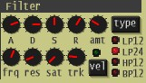
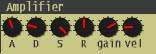
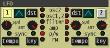
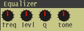
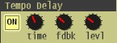
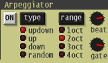

■基本操作
・パネルのサイズ/色
操作しやすい大きさに変更することができます。バックとテキストのカラーの変更も可能です。
パネル下の[opt]ボタン→Panel Size,Color Customizeで指定します。
※パネルサイズを変更した場合は、一度ウィンドウを閉じて再度開いてください。ただし、ホストアプリによっては、
一度曲データを閉じないとサイズが変更されないものもあります。
・つまみ/LCD
左クリックするとスライダーまたは、選択メニューが表示され操作可能になります。
スライダーはマウスホイールでの微調整が行えます。
スライダーを閉じるには、右クリックするか、スライダー以外の場所を左クリックします。
選択メニューも同様の操作で閉じることができます。
・LED/ボタン
LEDは直接左クリックすることで選択できます。また選択用のボタンがついている場合
は、ボタンを左クリックすることで選択を順送りできます。
・音色の切り替え
パネル下に音色名を表示しているＬＣＤがあります。ここをクリックすると、音色バンク/リストの一覧が
開きます。一覧から目的のプログラムを左クリックして音色を確定します。右クリックするとキャンセルになります。
■概要
Synth1は下記のような構造となっています。
16個あるVoice部分は2VCOのアナログシンセをシミュレートしています。
加えて、アルペジエータ、イコライザ、ディレイ、コーラスを装備しています。

■Oscillators
オシレータは２つあります。それぞれのオシレータの波形や音程などの基本パラメタと各種変調を調整します。
また、モジュレーションエンベロープ機能により、オシレータ２の音程、FM変調量、パルス幅
の３種類のなかの一つを時間的に変化させる機能をもっています。

| 1 | オシレータ１の波形を、サイン波、三角波、ノコギリ波、パルス波から選択します。 |
| FM | FM変調の割合を調整します。オシレータ２がモジュレータ、オシレータ１がキャリアの関係になります。
ただし、FM変調は、リングモジュレーションがオフの時のみ有効です。 |
| 2 | オシレータ２の波形を、三角波、ノコギリ波、パルス波、ノイズから選択します。 |
| ring | リング変調(AM変調)のオン/オフを決定します。オンの場合、オシレータ２の出力はリング変調されたものになります。 |
| track | オシレータ２のトラッキングオン/オフを決定します。トラッキングとは、打鍵したノートナンバーに応じた音程で
発音することです。オフになっている場合は、一定の周波数で発音します。 |
| sync | シンクロ機能のオン/オフを決定します。オンの場合、オシレータ１の周波数にあわせてオシレータ２の位相をリセットします。 |
| pitch | オシレータ２の音程を調整します。 |
| fine | オシレータ２の音程を微調整します。 |
| m.env | モジュレーションエンベロープのオン/オフを決定します。
オンの場合、以下のdest.,A,D,amtによって各種変調量が時間的に変化します。 |
| dest. | 変調先をオシレータ２の音程、FM変調量、パルス幅から選択します。 |
| A | モジュレーションエンベロープのアタックタイムを調整します。 |
| D | モジュレーションエンベロープのディケイタイムを調整します。 |
| amt | モジュレーションエンベロープの変化量を調整します。真中より右でプラスの変化量、左でマイナスの変化量、ちょうど真中の場合は変化量は０で時間的変化は発生しません。 |
| key shift | 打鍵したノートナンバーに対してオシレータ１，２の音程をトランスポーズします。 |
| p/w | パルス波のパルス幅を調整します。左にまわすと幅が小さく、右に回すと広く方形波に近くなります。オシレータ１，２両方ともに有効となります。 |
| mix | オシレータ１とオシレータ２の音量バランスを調整します。左に回すとオシレータ１の割合が大きく、右に回すとオシレータ２の割合が大きくなります。 |
| tune | オシレータ１とオシレータ２の音程を微調整します。 |
■Filter
レゾナンスつきフィルタと、簡易ディストーション(サチュレーション)で音色のカラーを
調整します。フィルタエンベロープにより、カットオフ周波数を時間的に変化させる事ができます。

| type | フィルターのタイプを、ローパス(12db)、ローパス(24db)、ハイパス(12db)、バンドパス(12db)から選択します。 |
| A | フィルターエンベロープのアタックタイムを調整します。 |
| D | フィルターエンベロープのディケイタイムを調整します。 |
| S | フィルターエンベロープのサスティンレベルを調整します。 |
| R | フィルターエンベロープのリリースタイムを調整します。 |
| amt | エンベロープの変化量を調整します。左に回すとエンベロープ変化が小さく、右にまわすと大きくなります。 |
| frq | 基準となるカットオフ周波数を調整します。 |
| res | レゾナンス量を調整します。 |
| sat | サチュレーション量を調整します。 |
| trk | カットオフ周波数のトラッキング感度を調整します。打鍵したノートナンバーに対してカットオフ周波数をどの程度変化させるかを調整します。
右いっぱいにまわすと、１オクターブのノートナンバー変化に対して１オクターブの周波数変化を（フル）、左いっぱいにまわすと、周波数は変化しません。
高域のノートで、高音が耳につきすぎる時等に使用します。 |
| vel | 打鍵時のベロシティ値によって、エンベロープ変化量を変化させるかどうかを決定します。 |
■Amplifier
音量の時間的変化等をエンベロープにより調整します。

| A | 音量エンベロープのアタックタイムを調整します。 |
| D | 音量エンベロープのディケイタイムを調整します。 |
| S | 音量エンベロープのサスティンレベルを調整します。 |
| R | 音量エンベロープのリリースタイムを調整します。 |
| gain | 基準音量を調整します。 |
| vel | 打鍵時のベロシティ値によって基準音量をどの程度変化させるかを調整します。左に回すと感度が小さく、右に回すと感度が大きく音量変化が大きくなります。 |
■LFO
VCO,VCA,VCFのいずれかのパラメタを周期的に変化（変調）させることで、さまざまな効果を調整します。
Synth1では２つのLFOが独立して動作します。ホストシーケンサのテンポに同期させることもできます。
なお、LFO1はMIDIのホイール情報によりその周波数や量を変化させることができます。
変化の感度はPlay ModeのLFO1 Wheel Sens.で調整します。

| 1 | LFO1のオン/オフを決定します。 |
| 左LCD | LFO1の波形をノコギリ波、三角波、サイン波、方形波、ランダム(サンプル＆ホールド)、ランダム（スムース変化）から選択します。 |
| 左dst | LFO1の変調先を、「オシレータ２のピッチ」、「オシレータ１と２のピッチ」、「フィルタのカットオフ周波数」、「音量」、「オシレータ１と２のパルス幅」、「ＦＭ変調量」から選択します。 |
| 左spd | LFO1の変調周期を調整します。下記のtempoで「同期」を選んでいる場合、１６小節〜３２分３連符で変調周期を指定します（※）。 |
| 左amt | LFO1の変調量を調整します。 |
| 左tempo | LFO1の変調周期をホストシーケンサのテンポに同期するかどうかを決定します。 |
| 左key | オンにすると、どのノートも押鍵されてない状態からいずれかのノートが打鍵された瞬間に、LFO1の位相をリセットします。
オフにすると、位相はリセットされません。 |
| 2 | LFO2のオン/オフを決定します。 |
| 右LCD | LFO2の波形をノコギリ波、三角波、サイン波、方形波、ランダム(サンプル＆ホールド)、ランダム（スムース変化）から選択します。 |
| 右dst | LFO2の変調先を、「オシレータ２のピッチ」、「オシレータ１と２のピッチ」、「フィルタのカットオフ周波数」、「音量」、「オシレータ１と２のパルス幅」、「ＦＭ変調量」から選択します。 |
| 右spd | LFO2の変調周期を調整します。下記のtempoで「同期」を選んでいる場合、１６小節〜３２分３連符で変調周期を指定します（※）。 |
| 右amt | LFO2の変調量を調整します。 |
| 右tempo | LFO2の変調周期をホストシーケンサのテンポに同期するかどうかを決定します。 |
| 右key | オンにすると、どのノートも押鍵されてない状態からいずれかのノートが打鍵された瞬間に、LFO2の位相をリセットします。
オフにすると、位相はリセットされません。 |
（※）tempo同期オンの状態で、spdスライダーに表示される記号の意味は下記の通りです。
(1)〜(32)→全音符〜32分音符
'+' →音符の足し算
'*' →音符の掛け算
'/3' →３連符
■Equalizer
１つのパラメトリックイコライザとハイパス/ローパスフィルタです。

| freq | パラメトリックイコライザの周波数を調整します。 |
| levl | パラメトリックイコライザのイコライジング量を調整します。左に回すとマイナス、右に回すとプラス、真中で０です。 |
| Q | パラメトリックイコライザのイコライジングカーブを調整します。左に回すと平坦になり、右に回すと急になります。 |
| tone | ローパス/ハイパスフィルタのカットオフを調整します。
左に回すとハイカットとして働き、高音が削られます。
右に回すとローカットとして働き、低音が削られます。
コード引きなどで低音が出すぎる場合や、ベース音のハイカットなどに便利です。
|
■Effect
ディストーション、リングモジュレーターなどから１種類を選んで使用できるエフェクターです。
| ON | エフェクトのオン/オフを決定します。 |
| LCD |
エフェクト種別を決定します。種別は以下の通りです。
a.d.1 アナログ風のディストーションです。負帰還による低域の減衰と、偶数次の倍音が特徴です。
a.d.2 アナログ風のディストーションその２です。
d.d. デジタル風のディストーションです。
deci. デシメーター（という呼び方が正しいかどうかよくわかりませんが。）です。
r.m. リングモジュレーターです。
comp. compressorです。
|
| ctl1 | エフェクトのctl1を調整します。 |
| ctl2 | エフェクトのctl2を調整します。 |
| level | 効果の量、または原音とのバランスを調整します。 |
ctl1,ctl2の意味
| 種別 | ctl1 | ctl2 |
| a.d.1 | 歪み量 | LOWパスフィルターのカットオフ周波数 |
| a.d.2 | 歪み量 | LOWパスフィルターのカットオフ周波数 |
| d.d. | 歪み量 | LOWパスフィルターのカットオフ周波数 |
| deci. | サンプリング周波数 | ビット数 |
| r.m. | 変調周波数 | 無効 |
| comp. | 圧縮効果の深さ | アタックタイム |
■Tempo Delay
ホストシーケンサのテンポに同期したディレイエフェクトです。
ただし、最大で約３秒(48KHz時)のバッファのため非常にゆっくりとしたテンポの場合は、
同期不可能となります。(96KHz動作時は、最大1.5秒になります。)

| ON | エフェクトのオン/オフを決定します。 |
| time | 「32分3連」〜「全音符」からディレイタイムを調整します。 |
| fdbk | フィードバック量を調整します。 |
| levl | ディレイ音量を調整します。 |
■Chorus/Flanger
ステレオのコーラス/フランジャエフェクトです。

| ON | エフェクトのオン/オフを決定します。 |
| LCD | コーラス、フランジャの効果を「1相」、「2相」、「4相」から選択します。1相の場合はモノラルとなります。
フランジャ効果を得たい時には、1相が向いているようです。 |
| time | 基本となる遅延時間を調整します。時間が小さいほどフランジャ効果となります。 |
| deph | 変調の量を調整します。 |
| rate | 変調周波数を調整します。 |
| fdbk | フィードバック量を調整します。 |
| levl | コーラス/フランジャ音量を調整します。 |
■Arpeggiator
単純なアルペジエータです。
アルペジエータとは、その名のとおり押鍵されている和音（単音でも可）を一音ずつ
一定のテンポで、自動演奏する機構です。

| ON | アルペジーエータのオン/オフを決定します。 |
| type | 演奏の方式を「updown」、「up」、「down」「random」から選択します。
「updown」は、押鍵されている鍵盤の低音から高音までを順番に往復演奏します。
「up」は低音から高音に、「down」は高音から低音に順番に演奏します。
「random」はランダムな順番に演奏します。
|
| range | 演奏する範囲をオクターブ単位で広げます。
1oct〜4octはそれぞれ、1〜4オクターブまで演奏範囲を広げます。 |
| beat | 演奏スピードを「全音符」〜「32分3連」から選択します。 |
| gate | 一つの鍵盤を押している時間（ゲートタイム）を調整します。
右いっぱいまでまわすと、音が途切れないように演奏するため、Play Modeの「レガート」、「ポルタメント」と組み合わせると効果的です。 |
■Play Mode
演奏に関する設定を行います。

| mode | 演奏モードを「ポリボイス」、「モノ」、「レガート」から選択します。
「ポリボイス」は、通常演奏で和音演奏が可能です。
「モノ」は1ボイスのみを使用して演奏します。和音演奏はできません。
「レガート」は1ボイスのみを使用する点は「モノ」と同じですが、
音が途切れないような演奏をした時に、VCO〜VCAの各エンベロープを
トリガさせずに、音程のみを変化させる点が異なります。
ポルタメント組み合わせて独特奏法が可能になります。
「モノ」、「レガート」ともにソロ演奏時に多く使われます。
|
| p.b range | MIDIのピッチベンド情報を受信したときの、ピッチの変化幅を調整します。 |
| portament | ポルタメントタイムを調整します。
ポルタメントとは、各ボイスが発音を開始した時に音程を目的の高さまで連続的に変化させる機能です。 |
| speed | Synth1は、MIDIのモジュレーションホイール情報を受信したとき、LFO1の変調周波数を変化させます。
その変化の感度を調整します。 |
| amt | Synth1は、MIDIのモジュレーションホイール情報を受信したとき、LFO1の変調量を変化させます。
その変化の感度を調整します。 |
| unison | 「ポリボイス」時は２ボイス、「モノ/レガート」時は４ボイスを使って各ノートを発音します。
微妙にピッチのずれた音が重なるため、音に厚みがでます。 |
| auto | 音が途切れないような演奏をした時にだけポルタメントを効かせる機能です。 |
■共通設定
音色プログラムの切り替えや保存、その他全体に関わる設定を行います。
Synth1の音色管理は、128音色を一つのバンクとして管理していて、
このバンクが合計10個あり、合計1280音色を同時管理可能です。
各音色プログラムは、1つのファイルとして保存されています。
そのファイルの格納フォルダは、バンク毎に分かれており
それぞれオプションダイアログ/Generalで設定することができます。

| vol | マスターボリュームを調整します。 |
| poly | ポリ演奏モード時の同時発音可能なボイス数を調整します。 |
| program | 音色プログラムを切り替えます。
LCDをクリックすることで、バンク/音色の一覧ウィンドウが開き、バンク/プログラムを選択できます。 |
| bank | 音色バンクを切り替えます。 |
| write | 現在の音色をファイルに書き込みます。
クリックすると音色書き込み用のウィンドウが開き、任意のバンク/プログラム番号に書き込む事ができます。
この時colorを指定すれば、一覧表示ではその色で表示されます。 |
| opt | オプションダイアログを開きます。
[Shift]キーを押しながらクリックすると、MIDI Contorl Change
ラーンモードに入ります。ラーンモードでは、MIDIコントールチェンジとSynth1のパラメタとの対応関係（Control Change Map）
を簡単に行う事ができます。Synth1上のパラメータをクリックした後に、MIDIコントローラやシンセサイザーなど
からツマミ操作を行うと、クリックしたSynth1のパラメタと、MIDI CCが対応づけされます。
ラーンモードを抜けるには、vol,poly,bank.write.optのどれかをクリックします。
|
■オプションダイアログ
起動中の全てのSynth1に共通となる一般設定とMIDI設定を行います。
| GENERAL | 音色ファイルの格納フォルダ、マスターチューニング、パネルに関する設定をします。
パネルのカラーの設定はHTMLなどで使われている#RRGGBB形式で指定します。
|
| MIDI | MIDIコントロールチェンジマップの編集/Load/Save,MIDIメッセージの設定などを指定します。
Receive Message : 通常、音色プログラムはMIDIのbank selectメッセージおよび、
program changeメッセージを受信すると変更されます。しかし、これらのメッセージを無視して、音色プログラムの変更を
行わないようにすることがでます。
Control Change Map : Synth1 V1.06には、nord lead2用のＣＣマップを用意しました。loadボタンで
読み込んで使用してください。
|